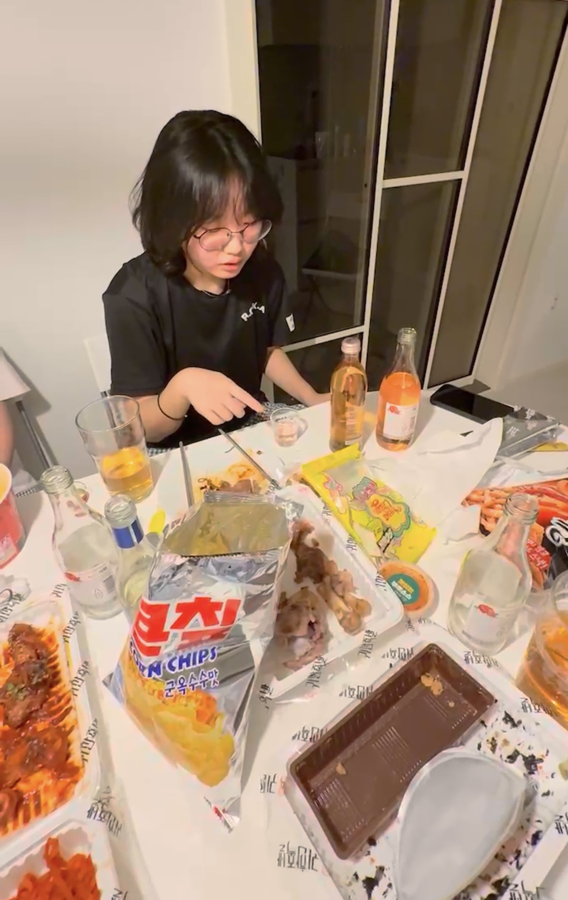
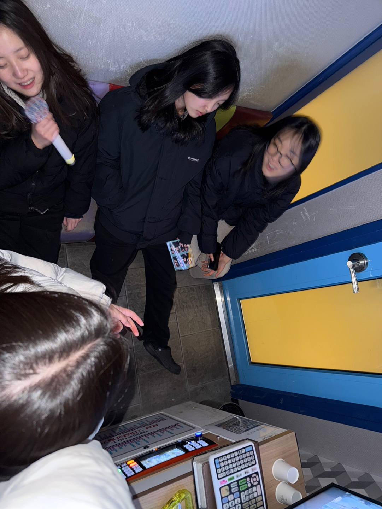

main →
20살이 되는 2025년!
12시 땡 하자마자 친구들과 처음 술을 마시러 갔다.
처음 마셔 보는 술에 잔뜩 신이 났었던 기억이 있다.
기대 했던 것과는 달리 전혀 맛이 없었다.
어른들이 마시면 크~~시원하다~라는 기분도 들지 않았다.
그럼에도 불구하고 기분이 굉장히 들떠있었던 기억이 있다.
지금 생각해 보면 술을 마셔서 신나는 것이 아니라
어른이 되었다는 느낌에 설레서 들떠 있었던 것이 아닌가 싶다.
2025년의 10월, 처음이자 마지막의 20살을 2개월 남겨둔 지금
어른이 되어도 달라지는건 딱히 없다는걸 느낀다.
그저 고등학생때는 숙제와 학원의 노예 였다면
성인이 된 지금은 과제와 알바의 노예로 진화한것뿐..
20살의 첫 시작을 가장 좋아하는 사람들과 있다는 생각,
성인이 되면 하루하루를 알차고 새롭게 보낼거라 생각했던 시기였기에
더욱 들떠있던 순간이었다!

